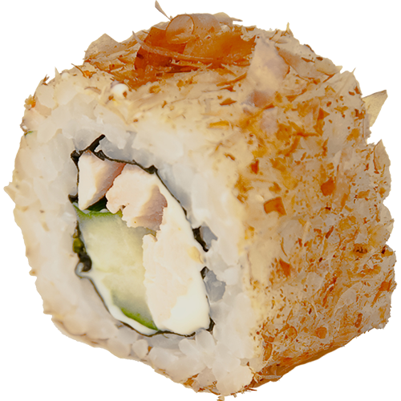

Роллыодна из разновидностей суши в японской кухне, отличительной особенностью которого является скручивание при помощи бамбуковой циновки (яп. 巻簾 — макису) в цилиндрическую форму, с последующим разрезанием на дольки. одки (яп. 巻簾 — макису) в цилиндрическую форму, с последующим разрезанием на дольки. |
"Профессор в университете задал своим студентам такой вопрос. — Всё, что существует, создано Богом? Один студент смело ответил: — Да, создано Богом. — Бог создал всё? — спросил профессор. — Да, сэр, — ответил студент. Профессор спросил: — Если Бог создал всё, значит, Бог создал зло, раз оно существует. И согласно тому принципу, что наши дела определяют нас самих, значит, Бог есть зло. Студент притих, услышав такой ответ. Профессор был очень доволен собой. Он похвалился студентам, что он ещё раз доказал, что Бог — это миф. Ещё один студент поднял руку и сказал: — Могу я задать вам вопрос, профессор? — Конечно, — ответил профессор. Студент поднялся и спросил: — Профессор, холод существует? — Что за вопрос? Конечно, существует. Тебе никогда не было холодно? Студенты засмеялись над вопросом молодого человека. Молодой человек ответил: — На самом деле, сэр, холода не существует. В соответствии с законами физики, то, что мы считаем холодом, в действительности является отсутствием тепла. Человек или предмет можно изучить на предмет того, имеет ли он или передаёт энергию. Абсолютный ноль (–460 градусов по Фаренгейту) есть полное отсутствие тепла. Вся материя становится инертной и неспособной реагировать при этой температуре. Холода не существует. Мы создали это слово для описания того, что мы чувствуем при отсутствии тепла. Студент продолжил: — Профессор, темнота существует? — Конечно, существует. — Вы опять неправы, сэр. Темноты также не существует. Темнота в действительности есть отсутствие света. Мы можем изучить свет, но не темноту. Мы можем использовать призму Ньютона, чтобы разложить белый свет на множество цветов и изучить различные длины волн каждого цвета. Вы не можете измерить темноту. Простой луч света может ворваться в мир темноты и осветить его. Как вы можете узнать, насколько тёмным является какое-либо пространство? Вы измеряете, какое количество света представлено. Не так ли? Темнота — это понятие, которое человек использует, чтобы описать, что происходит при отсутствии света. |